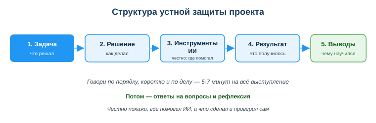
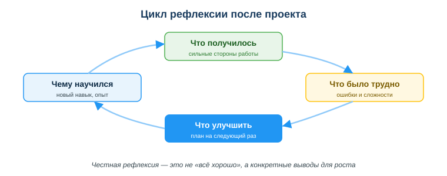

Дисциплина: Применение информационно-коммуникационных и цифровых технологий
Результат обучения: РО 2.3 — применение ИИ и цифровых технологий в разработке · Объём темы: 2 часа
Квалификация: 4S06130103 «Разработчик программного обеспечения»
Давай без вступлений — сразу картина, которую я вижу каждый год. Ты несколько занятий собирал свой проект из занятия 38: придумал, что он делает, написал код, где-то застрял и попросил подсказку у ИИ, потом всё-таки заставил программу работать. Файл готов, она запускается, ты выдыхаешь. И тут выясняется то, к чему почти никто заранее не готовится: мало сделать проект — его надо защитить. Встать перед группой и за пять-семь минут рассказать, что ты сделал и почему именно так. И вот на этом шаге хорошие проекты внезапно «тонут», а средние — вытягивают на отличную оценку. Разница — в защите.
Расскажу, как это выглядит на самом деле, на четырёх студентах с одной пары — я их запомнил, потому что контраст был показательный. Первый выходит и начинает читать код сверху вниз, строка за строкой: «здесь я объявил переменную, здесь цикл, здесь функция…». Через минуту группа смотрит в окно, а он и сам забыл сказать главное — какую задачу вообще решал. Второй говорит сумбурно, перескакивает, забывает показать результат вживую, а на простой вопрос «а почему ты сделал именно так?» застывает — слов нет, хотя решение-то у него было осмысленное. Третий пытается сделать вид, что весь код написал сам, а часть на самом деле подсказал ИИ, — и садится в лужу на первом же вопросе «объясни вот эту строчку», потому что сам её до конца не понимает.
А теперь четвёртый. Он выходит спокойно и говорит примерно так: «Задача была вот такая. Решал я её так, потому что… Здесь мне помог ИИ — вот в чём именно, и вот как я это проверил сам. Результат — смотрите, работает (запускает, показывает). Что бы я сделал иначе в следующий раз — вот это». Три минуты, и всем всё ясно. На вопросы отвечает по существу, потому что понимает каждую часть своей работы. И вот что важно: проект у него был не сложнее, чем у первых трёх. Местами даже проще. Но впечатление и оценка — небо и земля.
Разница между ними не в коде. Разница в том, что четвёртый владеет навыком защиты: знает структуру выступления, заранее продумал ответы на вопросы и честно относится к роли ИИ. И вот тебе первая хорошая новость темы: это именно навык, а не врождённый талант и не «умение красиво говорить». Ему учатся так же, как ты научился писать функции — по шагам и с тренировкой. Этому и посвящено занятие.
Теперь — про формальную сторону, потому что её надо понимать с самого начала, а не узнавать в день защиты. Защита проекта — это итоговый контроль по дисциплине «Применение ИКТ», форма контроля — зачёт. То есть это не тренировочное выступление «для галочки», а то, по чему тебе выставляют итог за весь курс. Оценка складывается из двух частей: сам проект (занятие 38) и его защита. Ориентир простой — «зачтено»: оно ставится, если проект сдан, выполнены обязательные требования к нему и пройдена устная защита, а суммарный балл за проект плюс защиту не ниже порога «зачтено». Конкретный порог и разбалловку устанавливает преподаватель или учебная часть — уточни их заранее, до защиты, а не постфактум. Смысл в том, что защита реально весит: можно сделать неплохой проект и не добрать до «зачтено», если завалить рассказ о нём. Поэтому относись к этому занятию как к подготовке к экзамену, а не как к «ну расскажу что-нибудь».
Зачем это лично тебе и твоей будущей работе — за пределами зачёта? Программист не тот, кто молча пишет код в углу. Разработчик постоянно объясняет и защищает свои решения: на код-ревью коллега спрашивает «почему ты сделал так, а не иначе?»; на демо для команды ты за пару минут показываешь, что готова новая функция; на встрече с заказчиком объясняешь, что сделано и что осталось. А ещё в любой живой команде регулярно проходит ретроспектива — честный разбор «что прошло хорошо, что улучшить». Всё это — та же самая защита и рефлексия, только в рабочих декорациях [1; 4]. Научишься сейчас на учебном проекте, где цена ошибки — переделать выступление, а не потерять клиента, — придёшь на работу уже умея.
Посмотри на схему «Структура устной защиты проекта» (приложение А) — это каркас, вокруг которого построено всё занятие. Дальше разберём каждый его элемент подробно.
После изучения темы ты сможешь:
Полные определения собраны в глоссарии (раздел 10).
Начнём с определения, потому что, честно говоря, половина провалов на защите растёт именно отсюда — из непонимания, что это вообще за жанр.
А теперь — уточнение от обратного, и его я подчёркиваю красным маркером каждый год. Защита — это НЕ пересказ кода строка за строкой. Это самое частое и самое разрушительное заблуждение из всех. Студенту кажется логичным: раз я показываю проект, надо показать весь код, до последней строчки. Но поставь себя на место слушателя — преподавателя, комиссии, а завтра команды или заказчика. Ему не нужен построчный пересказ; он и сам умеет читать код, причём быстрее, чем ты его зачитываешь вслух. Ему нужно понять ровно две вещи: какую задачу ты решал и что у тебя в итоге получилось. Код при желании прочитают сами. На защите ценятся не строки, а смысл и результат.
Аналогия, которая обычно всё ставит на место. Защита похожа на то, как повар выносит блюдо гостям. Он не зачитывает рецепт по граммам и не рассказывает, как чистил картошку и сколько раз промывал рис. Он говорит: «Это плов, готовил по такой-то идее, вот что в нём особенного, попробуйте». Рецепт (код) есть, он важен, но в центре стола — само блюдо (результат) и замысел (задача и решение). На защите ровно так же: код существует, но в фокусе — задача, результат и то, что ты понимаешь, как оно устроено.
Отсюда вытекает простой фильтр, которым ты сам проверишь любую свою фразу перед защитой: она помогает слушателю понять задачу и результат — или это лишняя техническая деталь для красоты? Если второе — вычёркивай без сожаления. На защите время дорогое: у тебя всего 5–7 минут, и каждую фразу «не по делу» ты отбираешь у результата.
Главный рабочий инструмент защиты — структура. Она делает ровно одну, но бесценную вещь: избавляет тебя от необходимости на ходу придумывать, что сказать дальше. Идёшь по заранее известным блокам — и каркас сам ведёт тебя за руку. Именно поэтому люди со структурой почти не «плывут»: даже разволновавшись, они помнят маршрут. Посмотри на схему «Структура устной защиты проекта» (приложение А): пять блоков идут слева направо стрелками — задача, решение, инструменты ИИ, результат, выводы. Это и есть твой маршрут. Разберём каждый блок: что это, зачем он, что говорить и на чём чаще всего проваливаются.

Блок 1. Задача — что нужно было сделать.
Это вступление. Одно-два предложения, отвечающие на вопрос «зачем вообще существует твоя программа». Начни прямо со слов «Мне нужно было…» или «Задача была…». Например: «Задача была — сделать программу, которая считает средний балл студента по введённым оценкам». Этот блок весит больше, чем кажется на первый взгляд: если слушатель с первых секунд понял, что ты решал, всё остальное он слушает осмысленно, «нанизывая» на понятную задачу. А вот если ты стартуешь сразу с кода, минуя задачу, слушатель всё выступление будет гадать, к чему это вообще — и к финалу устанет и потеряет нить.
Где проваливаются: размытые формулировки вроде «ну, я делал проект про оценки». Это не задача, это тема. Скажи конкретно, что программа должна делать и для кого.
Блок 2. Решение — как ты подошёл к задаче.
Здесь ты рассказываешь логику, а не код. Какие шаги сделал, на какие части разбил задачу и — вот это ценится особенно — почему именно так. Пример: «Я разбил программу на три части: ввод оценок, расчёт среднего и вывод результата. Так удобнее — каждую часть можно проверить отдельно». Заметь: ни одной строки кода, а слушателю уже понятно, как устроено решение. Слово «почему» — твой лучший друг в этом блоке: именно объяснение причины показывает, что ты думал головой, а не копировал вслепую. И, кстати, именно этот блок готовит тебя к самому частому вопросу на защите — «почему ты сделал так, а не иначе?».
Где проваливаются: сползают в зачитывание кода. Держись идеи решения; сам код покажешь живьём в блоке «результат».
Блок 3. Инструменты ИИ — где помогал ИИ и что ты проверил сам.
Этот блок — особенность вашего курса и, скажу прямо, признак взрослого разработчика. Здесь ты честно называешь, в чём именно тебе помог ИИ-ассистент: подсказал идею, объяснил непонятную ошибку, набросал черновик функции. И сразу — что ты с этим сделал сам: прочитал, разобрался, проверил на своих данных. Пример: «С форматированием чисел я сам не справлялся, попросил ИИ показать пример. Он дал код, я разобрал, как он работает, и проверил на своих данных — округляет правильно». Почему это так важно и как правильно формулировать — подробно в разделе 4.5, это ключевой раздел темы.
Где проваливаются: в двух крайностях. Либо прячут роль ИИ совсем («всё сам»), либо, наоборот, отмахиваются «да это всё ИИ написал». Ни то, ни другое не правда и оба варианта играют против тебя.
Блок 4. Результат — что получилось, лучше показать вживую.
Кульминация защиты. Здесь ты доказываешь, что работа реально сделана: запускаешь программу, открываешь готовый файл, показываешь схему. Показать всегда сильнее, чем рассказать. Фраза «программа считает средний балл» — это слова, им можно не поверить; запущенная на глазах программа, которая вывела «4.3», — это доказательство, спорить не с чем. Как готовить демонстрацию, чтобы она не подвела в самый ответственный момент, — подробно в разделе 4.4 (а подводит она чаще всего).
Где проваливаются: долго описывают результат словами вместо того, чтобы просто его показать. Если результат можно показать — показывай, не рассказывай.
Блок 5. Выводы — чему научился, что бы сделал иначе.
Финал. Здесь ты на минуту поднимаешься над проектом и смотришь на него сверху: что он тебе дал и что бы ты в нём улучшил. Пример: «Я научился разбивать код на функции. В следующий раз сразу продумаю проверку ввода — сейчас программа падает, если ввести букву вместо числа». Этот блок плавно перетекает в рефлексию (раздел 4.6) и показывает то, что комиссия ценит порой выше самого проекта: способность трезво оценить свою работу. Готовое, безупречное «всё идеально» обычно значит, что человек просто не всматривался.
Где проваливаются: дежурное «ну, всё получилось, вопросов нет». Это сигнал, что ты не думал о работе всерьёз. Всегда есть чему научиться и что улучшить — и это нормально, так и должно быть.
Запомни порядок как единую цепочку: задача → решение → инструменты ИИ → результат → выводы. Если во время выступления вдруг запутался и потерял мысль — мысленно вернись к схеме (приложение А) и спроси себя: «в каком я блоке и какой следующий?». Каркас не даст тебе провалиться в пустоту — это его главная работа.
Скажу то, во что новички не верят, пока не проверят на себе: спокойствие на защите — не «врождённая уверенность» и не удача. Оно целиком вырастает из подготовки. Логика простая: волнение — это страх перед неизвестностью. Чем меньше на защите неизвестного (ты знаешь, что скажешь, что покажешь и о чём спросят), тем меньше волнения. Поэтому уверенные на защите — это не самые бойкие, а самые подготовленные. Вот пошаговый алгоритм, которым я советую пользоваться всем.
Шаг 1. Напиши план выступления по пяти блокам.
Не «в голове прикину» — а письменно, по одной-две фразы на каждый блок. Это твой опорный конспект, на который можно опереться глазами, если собьёшься. Пример готового плана:
Когда план записан, у тебя на руках уже готовый скелет всего выступления. Разволнуешься — заглянул в листок, нашёл, где ты, и пошёл дальше. Это не «шпаргалка», это нормальный рабочий инструмент; на настоящих демо люди тоже держат перед глазами тезисы.
Шаг 2. Проговори вслух хотя бы один раз.
«Про себя» и «вслух» — это две совершенно разные вещи, и разницу все недооценивают. В голове всё гладко и логично, а вслух внезапно выясняется, что фраза не складывается, мысль ветвится и ты говоришь вдвое дольше, чем думал. Проговори защиту вслух — себе, соседу по комнате, в пустой аудитории, на диктофон телефона (последнее особенно полезно — потом послушаешь себя со стороны и всё поймёшь). Это снимает добрую половину страха: рот уже один раз произнёс эти слова, на защите они пойдут заметно легче.
Шаг 3. Проверь тайминг.
У тебя 5–7 минут на всё выступление. Это меньше, чем кажется, — почти все в первый раз не укладываются. Засеки время, пока проговариваешь вслух. Если вылезаешь за рамки — режь блок «решение»: именно там речь чаще всего расползается на лишние технические детали. Перенеси освободившееся время на показ результата — он убеждает сильнее. Общее правило: лучше сказать меньше, но чётко, чем много и сумбурно. Грубый ориентир по времени: задача и решение — около двух минут, инструменты ИИ — полминуты-минута, результат с показом — две-три минуты, выводы — полминуты. Не воспринимай как закон, но как рамку — вполне.
Шаг 4. Подготовь демонстрацию (см. раздел 4.4) — это отдельный важный шаг, не хвостик к остальным.
Заранее реши, что и как именно покажешь, и — обязательно — проверь, что оно работает на том компьютере, где будет защита. Это тот шаг, который ленятся сделать, и именно он потом «стреляет».
Шаг 5. Продумай вероятные вопросы (см. раздел 4.5.2).
Поставь себя на место слушателя: о чём он логично спросит? Набросай заранее 2–3 вопроса и короткие ответы на них. Механизм тут волшебный: если ты предугадал вопрос, на защите он звучит уже как «знакомый», и ты отвечаешь спокойно, почти по нотам. А половина страха перед вопросами — это как раз страх, что спросят «что-то неожиданное».
Демонстрация — одновременно самая убедительная и самая хрупкая часть защиты. Убедительная, потому что работающую программу невозможно оспорить. Хрупкая, потому что именно здесь чаще всего что-то идёт не так — и «у меня же дома работало» — это, без преувеличения, фраза, которую слышал каждый преподаватель, и не по одному разу. Чтобы не оказаться её очередным автором, к демо готовятся отдельно и заранее.
Зачем вообще показывать вживую. Слова легко поставить под сомнение, работающую программу — нет. Когда ты на глазах у всех вводишь данные и программа выдаёт правильный результат, у слушателя просто не остаётся вопроса «а оно вообще работает?». Демо экономит тебе кучу слов и снимает половину недоверия ещё до вопросов. Отсюда правило: если результат можно показать — показывай, не описывай.
Что именно можно показывать. Зависит от твоего проекта:
Пошаговый план демонстрации. Распиши заранее по шагам, буквально как для новичка: что открыть, что нажать, что должно появиться на экране. Например:
Этот план — твоя страховка. Даже если разволнуешься и голова опустеет, ты просто идёшь по написанным шагам, как по рельсам, и демо не разваливается.
Подстелить соломку — обязательно, а не «если успею». Демонстрации подводят, и опытные это знают, поэтому всегда готовятся к тому, что что-то пойдёт не так:
Это центральный по смыслу раздел темы и логичное завершение всего курса. Весь год ты учился человекоцентричному подходу к ИИ: ИИ усиливает тебя, но решение и ответственность остаются за тобой [3]. На защите этот принцип проходит финальную проверку — и, что важно, проверку публичную.
Студенту почти всегда кажется наоборот: если признать, что часть подсказал ИИ, выступление будто просядет — «как будто я не сам сделал». На деле всё ровно наоборот, и вот три причины, по которым честность выигрывает.
Во-первых, скрыть всё равно не выйдет. Если ты вставил код, который сам не понимаешь, это вскроется на первом же вопросе. Прозвучит «объясни, что делает вот эта строка» — и если ты не сможешь, обман станет очевиден всем сразу. А провал на вопросе после попытки скрытничать выглядит куда хуже и запоминается куда сильнее, чем спокойное «здесь мне помог ИИ» с самого начала. Ты не выигрываешь ничего, а рискуешь всем.
Во-вторых, честность ценится выше, чем поза «я гений». И преподаватель, и твоя будущая команда прекрасно знают, что современный разработчик пользуется ИИ, — это нормальный рабочий инструмент, никого им не удивишь и не разочаруешь. Ненормально другое — не понимать, чем ты пользуешься. Поэтому фраза «здесь мне помог ИИ, и вот как я это проверил» читается как зрелость: ты владеешь инструментом, а не прячешься за ним.
В-третьих, это и есть та самая ответственность, о которой шёл весь курс. За код, который ты сдаёшь и защищаешь, отвечаешь ты — даже за тот фрагмент, что сгенерировал ИИ. Честно назвать роль ИИ — значит вслух признать эту ответственность, а не спихнуть её на инструмент. Именно этого от разработчика и ждут.
Сформулируем правило, которое стоит запомнить навсегда: используешь ИИ — понимай и проверяй результат, и говори об этом открыто. Тогда ИИ — твой инструмент усиления, а не способ обмануть и попасться. Сравни два подхода лоб в лоб:
| Честное использование ИИ (зрело) | Скрытое использование ИИ (провально) |
|---|---|
| «Здесь ИИ дал черновик, я разобрался и проверил» | «Это я сам написал» (хотя не понимаешь код) |
| можешь объяснить любую строку | застываешь на вопросе «объясни эту строку» |
| ИИ — инструмент, контроль у тебя | переложил работу на ИИ, контроль потерян |
| показываешь, что владеешь инструментом | показываешь, что зависишь от него вслепую |
Присмотрись к таблице: левый столбец — это про контроль и понимание, правый — про их отсутствие. Комиссия читает эту разницу мгновенно, даже не вникая в код.
После выступления почти всегда идут вопросы — от преподавателя, комиссии или группы. И многих именно вопросы пугают сильнее самого выступления: «а вдруг спросят то, чего я не знаю?». Разберём спокойно, как держаться, потому что бояться тут особо нечего.
Типичные вопросы и как к ним готовиться. Хорошая новость: почти все вопросы сводятся к трём типам, и их легко предугадать заранее:
Набросай заранее себе 2–3 вероятных вопроса по своему проекту и краткие ответы. Тогда добрая половина вопросов на защите окажется «знакомыми» — а знакомое не пугает.
Как отвечать — несколько простых правил, проверенных практикой:
Теория теорией, а на защите нужен конкретный речевой инструмент, который сработает в ту самую секунду, когда ты завис. Студенты и сами об этом просят: «дайте готовые фразы на случай, когда не знаю, что сказать». Даю — и заодно объясняю, как каждая устроена и почему работает, потому что заучивать их бездумно смысла нет.
Сначала — зачем они вообще нужны. Паника на защите почти всегда рождается из пустоты: вопрос прилетел, а в голове — ни слова, и эта тишина пугает сильнее самого вопроса. Заготовленная фраза заполняет эту пустоту мгновенно: рот уже говорит что-то вежливое и осмысленное, пока голова догоняет и формулирует ответ. Это ровно тот же приём, что и опорный план выступления, — только для незапланированных моментов. И держатся эти фразы на том же фундаменте, что и всё занятие: спокойствие и честность вместо выдумки на ходу. Ни одна из них не помогает соврать — все они помогают честно выиграть время или честно признать пробел.
Вот рабочий набор. Проговори две-три вслух заранее (см. шаг 2 подготовки в разделе 4.3) — тогда на защите они прозвучат естественно, а не как зачитанная шпаргалка.
Чтобы выиграть время и собраться:
Чтобы уточнить непонятный вопрос:
Чтобы честно обойтись без выдумки, когда не знаешь:
Чтобы честно говорить о недоделках и роли ИИ:
Чтобы спокойно принять критику:
Рефлексия — вторая большая тема занятия и навык, который останется с тобой на всю карьеру, куда бы ты ни пошёл. Это честный разбор собственной работы. Ключевое слово тут — честный: рефлексия это не «всё было нормально, мне понравилось», а конкретные выводы, по которым видно, что ты действительно сел и подумал, а не отписался.
Удобнее всего идти по кругу из четырёх вопросов. Посмотри на схему «Цикл рефлексии после проекта» (приложение Б) — четыре вопроса расположены по кругу, и круг не для красоты: рефлексия повторяется после каждого проекта, и с каждым разом ты становишься чуть лучше. Это не разовое упражнение к зачёту, а привычка.

1. Что получилось — твои сильные стороны в этой работе.
Начни с хорошего: что вышло удачно. Это не хвастовство, а умение видеть свои сильные стороны — без него не поймёшь, что стоит повторять.
Плохо (общо): «всё получилось».
Хорошо (конкретно): «получилось аккуратно разбить программу на функции, и каждую было удобно проверять отдельно».
2. Что было трудно — где спотыкался, какие ошибки.
Здесь честно назови сложные места. Не прячь трудности — наоборот, способность их назвать показывает, что ты осознаёшь свою работу, а не проскочил её на автопилоте.
Плохо: «трудностей не было».
Хорошо: «трудно было с форматированием чисел — долго не получалось округлить правильно, пришлось разбираться отдельно».
3. Что улучшить — конкретный план на следующий раз.
Самый ценный из четырёх вопросов: именно он превращает разбор в развитие. Назови конкретно, что сделаешь иначе.
Плохо: «буду стараться лучше».
Хорошо: «в следующий раз сразу добавлю проверку ввода, чтобы программа не падала от буквы вместо числа».
4. Чему научился — новый навык или опыт.
Зафиксируй, что нового ты теперь умеешь. Это твой реальный прирост за проект — то, ради чего всё и затевалось.
Плохо: «много чему научился».
Хорошо: «научился просить у ИИ пример и проверять его на своих данных, а не вставлять вслепую».
Связь с профессией. Эти четыре вопроса — не учебная выдумка ради галочки. Ровно так устроена ретроспектива — командный разбор, который регулярно проводят команды разработчиков по гибким методологиям после каждой итерации работы [4]. Команда честно отвечает: что прошло хорошо, что мешало, что улучшим в следующем спринте. Цель та же, что и у тебя, — становиться лучше с каждым циклом. Освоив рефлексию на учебном проекте, ты придёшь в команду уже понимая, зачем вообще нужна ретроспектива и как в ней осмысленно участвовать, а не отмалчиваться.
Сведём две большие части темы вместе, чтобы ты видел целое, а не два отдельных навыка. Защита и рефлексия — это две стороны одного умения: понимать и объяснять свою работу.
Они стыкуются в блоке «выводы»: то, до чего ты дошёл в рефлексии («научился разбивать код на функции», «в следующий раз добавлю проверку ввода»), и есть готовое содержание пятого блока защиты. Отсюда практичный совет: рефлексию удобно сделать до защиты, а не после. Тогда к моменту выступления выводы у тебя уже сформулированы, и пятый блок не приходится выдумывать на ходу.
И ещё одна общая черта обеих частей — честность. Честная защита (открыто про роль ИИ, без сочинённых на ходу ответов) и честная рефлексия (конкретные выводы, а не «всё хорошо») держатся на одном и том же фундаменте: ты не притворяешься, а трезво понимаешь, что сделал. Это, по сути, и есть итог всего курса — зрелое, ответственное отношение к своей работе и к инструментам, включая ИИ. Ради этого всё и затевалось.
Пример 1 — образцовая короткая защита.
Студент защищает проект-калькулятор сметы. Он говорит: «Задача — посчитать смету по введённым позициям. Решал так: разбил на функции ввода, расчёта и вывода — каждую удобно проверять отдельно. ИИ помог разобраться с форматированием чисел: я попросил пример, разобрал его и проверил на своих данных. Результат — вот, считает (запускает, вводит тестовые позиции, программа выдаёт итог). Вывод: научился структурировать код по функциям; в следующий раз сразу продумаю проверку ввода».
Разбор: все пять блоков по порядку, ничего лишнего, результат показан вживую, роль ИИ названа честно и с проверкой, вывод конкретный. Уложился в несколько минут. Это эталон — и не потому, что проект сложный (он как раз простой), а потому, что рассказ чёткий и честный. Именно так выглядит уверенное «зачтено».
Пример 2 — типичная провальная защита и её починка.
Студент выходит и начинает читать код подряд: «здесь переменная, здесь цикл, здесь ещё функция…». Про задачу и результат не сказал ни слова, роль ИИ обошёл стороной. На вопрос «объясни вот эту строку» (а её как раз подсказал ИИ) — замолкает.
Разбор: две ошибки разом. Первая — пересказ кода вместо рассказа о задаче и результате (нарушен принцип раздела 4.1). Вторая — скрытая роль ИИ всплыла на первом же вопросе (нарушен принцип 4.5). Обидно то, что проект-то рабочий.
Как починить: идти по схеме «задача → решение → инструменты ИИ → результат → выводы», показать результат вживую и заранее честно сказать, где помогал ИИ, разобрав каждую такую строку для себя до защиты. Тот же самый проект — но совершенно другая защита и другая оценка.
Пример 3 — честный ответ «я не знаю».
На защите программы анализа данных студента спрашивают: «а что будет, если в файле окажется пустая строка?». Он об этом честно не подумал. Вместо того чтобы сочинять, отвечает: «Честно — этот случай я не проверял. Думаю, программа может выдать ошибку. Спасибо, это как раз то, что стоит добавить в проверку ввода».
Разбор: образцовая реакция. Студент не выдумал неправду, признал пробел и тут же превратил его в вывод на улучшение — фактически на глазах у комиссии продемонстрировал ту самую рефлексию из раздела 4.6. Такой ответ оставляет лучшее впечатление, чем уверенная выдумка, которую опровергают следующим же вопросом.
Пример 4 — демонстрация, которую спасла подготовка.
У студентки на защите программа не запустилась: на аудиторном компьютере не оказалось нужной библиотеки. Но она заранее записала короткое видео работы программы. Спокойно говорит: «На этой машине не хватает библиотеки, но вот запись, как это работает у меня», — показывает 20-секундное видео и параллельно объясняет шаги.
Разбор: ровно тот случай из раздела 4.4, ради которого делают запасной вариант. Живой запуск подвёл — а защита не сорвалась, потому что «соломка» была подстелена. Без запасного варианта на этом месте была бы паника и минус к оценке.
Основная содержательная база темы:
Дополнительно:
Нормативные источники РК:
Международные рамки:
Электронные ресурсы:
assets/39_shema-struktura-zaschity.svg. Пять блоков идут по порядку слева направо: задача → решение → инструменты ИИ → результат → выводы; на третьем блоке — пометка «честно: где помогал ИИ». Внизу напоминание: говори коротко, 5–7 минут, затем — ответы на вопросы и рефлексия. Читай схему как маршрут своего выступления.assets/39_shema-cikl-refleksii.svg. Четыре вопроса расположены по кругу: что получилось → что было трудно → что улучшить → чему научился. Круг означает, что рефлексия повторяется после каждого проекта, и каждый раз ты растёшь. Внизу напоминание: честная рефлексия — это конкретные выводы, а не «всё хорошо».Материал подготовлен на основе урока темы (urok.md) и приведённых в конце источников; он расширяет и углубляет содержание урока для самостоятельного изучения. Источники приведены главами и ссылками (без номеров страниц); нормативные акты — с реквизитами.
Разработал: преподаватель ИКТ, магистр управления и информационной безопасности Калиаскаров Д.А.
Материал одобрен к использованию в обучении решением Педагогического совета ТОО «Колледж Хекслет Казахстан».